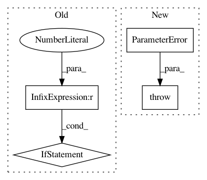

9b95e0f07b60b6a144893dcc506dfaf90db61c95,librosa/feature/utils.py,,stack_memory,#,119
Before Change
history = np.vstack([np.roll(data, -i * delay, axis=1) for i in range(n_steps)[::-1]])
// Trim to original width
if delay > 0:
history = history[:, :t]
else:
history = history[:, -t:]
// Make contiguous
return np.asfortranarray(history)
After Change
t = data.shape[-1]
if t < 1:
raise ParameterError("Cannot stack memory when input data has "
"no columns. Given data.shape={}".format(data.shape))
kwargs.setdefault("mode", "constant")
if kwargs["mode"] == "constant":
kwargs.setdefault("constant_values", [0])
In pattern: SUPERPATTERN
Frequency: 3
Non-data size: 4
Instances
Project Name: librosa/librosa
Commit Name: 9b95e0f07b60b6a144893dcc506dfaf90db61c95
Time: 2020-05-18
Author: bmcfee@users.noreply.github.com
File Name: librosa/feature/utils.py
Class Name:
Method Name: stack_memory
Project Name: librosa/librosa
Commit Name: d9f36b1c8bb77f6829c51987ce310831730623ba
Time: 2019-12-27
Author: kogito@hotmail.fr
File Name: librosa/feature/inverse.py
Class Name:
Method Name: mfcc_to_mel
Project Name: librosa/librosa
Commit Name: cfff799d604ea57385ea2c0e49d6ed9662a38a17
Time: 2015-07-01
Author: ebattenberg@gmail.com
File Name: librosa/core/constantq.py
Class Name:
Method Name: cqt